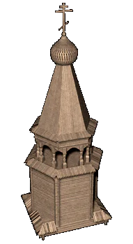

|
Обряды и праздники |
|
| В Древней Руси
календарные праздники и обряды обычно
распределялись по временам года. Были и обряды,
связанные с отдельными работами: первым выгоном
скота в поле, началом сева, началом и окончанием
жатвы. Основные циклы зимних обрядов у восточных славян были приурочены к зимнему солнецевороту (святкам), длившемуся от Рождества до Крещения (водокрещи), включая и Новый Год. Существовала новогодняя обрядность: специальная обрядовая еда, магические действия с хлебом, зерном и соло-мой, колядование, ряжение и гадания. Обрядовой едой была кутья - под Рождество постная, под Новый Год - богатая, «щедрая». Под Новый Год на пол стелили солому, на столе под скатертью выкладывали крест из разного зерна. Не забывали и скот - его кормили обрядовым хлебом, зерном или соломой. Все эти обряды должны были обеспечить в наступающем году урожай, здоровье и приплод скота. Под новый год гадали, на Святки и Новый Год - колядовали. Песни-колядки содержали пожелания здоровья, счастья и хорошего урожая хозяевам дома, около которого их пели. Колядовщики рядились: распространены были маски быка, коня и козы. На Крещенье святочное веселье заканчивалось. Крещенская обрядность была связана с водой: у проруби ходили крестным ходом, святили воду, купались в проруби. Первым весенним праздником восточно-славянского календаря была масленица, которая была не христианским, но языческим праздником. Обычно на масленицу сжигали чучело, которое воплощало в себе мрак, зиму и смерть. На Юрьев день (23 апреля) в первый раз выгоняли скот, что сопровождалось особыми обрядами - оберегами. Хозяйки выгоняли скотину освященной на вербное воскресенье хворостиной, которую потом или бросали в воду, или втыкали на меже в поле. В вербное восресенье из церкви приносили освященную вербу и для лучшего здоровья стегали ею скот и людей. Четверг перед Пасхой назывался «великим», или чистым. В этот день обливались и умывались родниковой водой, принесенной до восхода солнца. На Пасху начинались гулянья и хороводы, устраивались качели. Большое значение имела специальная обрядовая еда - куличи, пасха, крашенные яйца. Широко отмечалась у русских Троица, у украинцев и белоруссов - Иван Купала. Ряд обычаев был связан с жатвой, особенно с ее окончанием - почти повсюду оставляли недожатым последний пучок колосьев. Осенним праздником был Покров - в деревнях начинались свадьбы. С уборкой урожая годовой сельскохозяйственный цикл заканчивался и начиналась подготовка к новому году. Наряду с вышеперечисленными календарными обрядами были и обряды семейные - свадебные, связанные с рождением ребенка, обряды похоронные. |
|
Текст и
иллюстрации (c) 1997 Snowball Interactive Entertainment, Inc. |